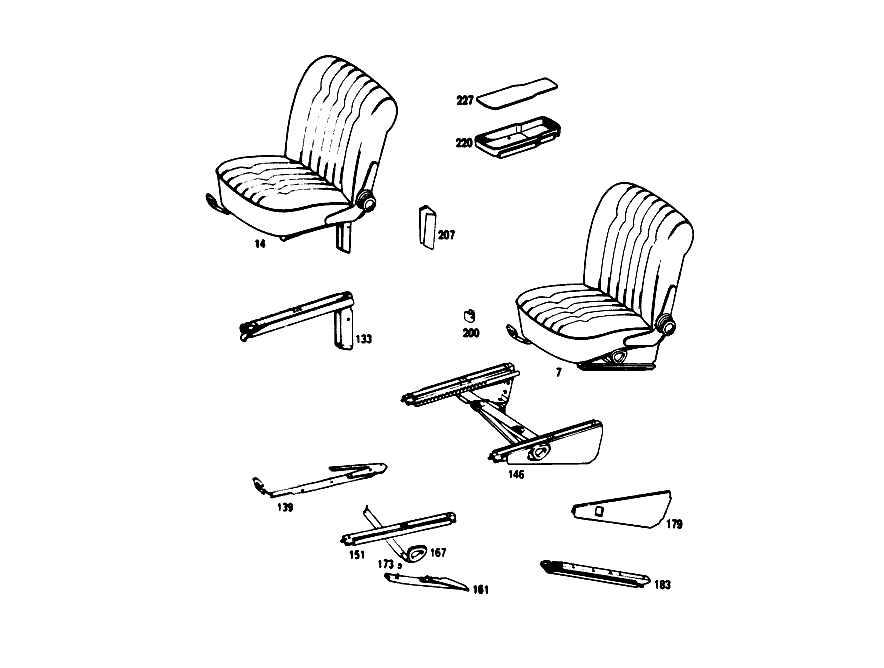

| № | Артикул | Название | Кол. | Примечание | Ограничение |
|---|---|---|---|---|---|
| 27 | A 115 910 43 22 | - РАМА ПОДУШКИ | 2 | ||
| 33 | A 108 910 00 40 | - КОРОБ ПРУЖИНЫ | 2 | ||
| 43 | A 000 984 20 61 | - Скоба | 32 | ||
| 66 | A 110 910 21 34 | - РАМА СПИНКИ | 2 | с SPRING CORE | |
| 85 | A 000 985 06 62 | - Диск | 2 | ||
| 91 | A 110 987 07 39 | - РЕЗИНОВЫЙ УПОР | 8 | [015] 012 UP TO CHASSIS 002845; 014 UP TO CHASSIS 001335; 015 UP TO CHASSIS 000215 | |
| 97 | A 000 910 43 85 | - РЕГУЛИРОВКА СПИНКИ | 1 | СНАРУЖИ СЛЕВА [002] 012 UP TO CHASSIS 061685 EXCEPT FOR, SEE GROUP 68, FOOTNOTE 35; 014 UP TO CHASSIS 047399 EXCEPT FOR, SEE GROUP 68, FOOTNOTE 29; 015 UP TO CHASSIS 002652 | |
| 103 | A 000 918 03 26 | - Маховичок | 2 | [002] 012 UP TO CHASSIS 061685 EXCEPT FOR, SEE GROUP 68, FOOTNOTE 35; 014 UP TO CHASSIS 047399 EXCEPT FOR, SEE GROUP 68, FOOTNOTE 29; 015 UP TO CHASSIS 002652 | |
| 107 | A 108 918 00 27 | - СОЕДИНЕНИЕ | 1 | [002] 012 UP TO CHASSIS 061685 EXCEPT FOR, SEE GROUP 68, FOOTNOTE 35; 014 UP TO CHASSIS 047399 EXCEPT FOR, SEE GROUP 68, FOOTNOTE 29; 015 UP TO CHASSIS 002652 | |
| 112 | A 000 918 06 96 | - ПОДКЛАДКА | 4 | [002] 012 UP TO CHASSIS 061685 EXCEPT FOR, SEE GROUP 68, FOOTNOTE 35; 014 UP TO CHASSIS 047399 EXCEPT FOR, SEE GROUP 68, FOOTNOTE 29; 015 UP TO CHASSIS 002652 | |
| 117 | A 112 990 01 31 | - БОЛТ | 8 | FRONT SEAT BACKREST с BACKREST ADJUSTER TO FRONT SEAT CUSHION [002] 012 UP TO CHASSIS 061685 EXCEPT FOR, SEE GROUP 68, FOOTNOTE 35; 014 UP TO CHASSIS 047399 EXCEPT FOR, SEE GROUP 68, FOOTNOTE 29; 015 UP TO CHASSIS 002652 | |
| 133 | A 108 910 02 05 | - НАПРАВЛЯЮЩАЯ СИДЕНЬЯ | 1 | ВНУТРИ СПРАВА Рулевое управление: Влево | |
| 139 | A 113 910 01 05 | - ФИКСАТОР | 1 | СЛЕВА | |
| 146 | A 108 910 09 36 | - РЕГУЛИРОВКА СИДЕНЬЯ | - | Рулевое управление: Влево | |
| 146 | A 108 910 11 36 | - РЕГУЛИРОВКА СИДЕНЬЯ | 1 | СЛЕВА Рулевое управление: Влево [019] 012 FROM CHASSIS 066423; 014 FROM CHASSIS 050921; 015 FROM CHASSIS 002703 | |
| 151 | A 108 910 13 05 | - НАПРАВЛЯЮЩАЯ СИДЕНЬЯ | 1 | СВЕРХУ | |
| 161 | A 116 910 15 14 | - Держатель | 1 | СЛЕВА Рулевое управление: Влево [021] 016 UP TO CHASSIS 054278; 018,019 UP TO CHASSIS 059270 | |
| 167 | A 108 910 03 71 | - РЫЧАГ | 1 | РЕГУЛИР. СИД. ПО ВЫСОТЕ СЛЕВА Рулевое управление: Влево [019] 012 FROM CHASSIS 066423; 014 FROM CHASSIS 050921; 015 FROM CHASSIS 002703 | |
| 173 | A 116 919 00 33 | РАСПОРН. ТРУБКА | 1 | ||
| 183 | A 108 910 35 05 | - НАПРАВЛЯЮЩАЯ СИДЕНЬЯ | - | Рулевое управление: Влево | |
| 187 | A 108 913 01 28 | - ПАНЕЛЬ | - | ||
| 187 | A 115 913 27 28 | - ПАНЕЛЬ | 2 | СЛЕВА [003] 012 FROM CHASSIS 047400, ALSO INSTALLED ON, SEE GROUP 68, FOOTNOTE 35; 014 FROM CHASSIS 047400, ALSO INSTALLED ON, SEE GROUP 68, FOOTNOTE 29; 015 FROM CHASSIS 002653 [016] 012 FROM CHASSIS 073381; 016 FROM CHASSIS 014981; 018 FROM CHASSIS 014025; 019 FROM CHASSIS 014024 | |
| 193 | A 108 913 03 28 | - ПАНЕЛЬ | - | ||
| 200 | A 116 919 00 17 | ПРОСТАВКА | 1 | FRONT SEAT TO SIDE MEMBER,OUTSIDE | |
| 207 | A 108 919 20 20 | ПАНЕЛЬ | 1 | ПРАВ. СИДЕНЬЕ, СЛЕВА Рулевое управление: Влево [001] STATE COLOR AND CHASSIS NO. WHEN ORDERING [023] 012 FROM CHASSIS 003732; 014 FROM CHASSIS 002160; 015 FROM CHASSIS 000320 | |
| 220 | A 108 841 01 74 | ЧАШКА | 1 | [026] 016 UP TO CHASSIS 074452; 018,019 UP TO CHASSIS 081248 | |
| 227 | A 108 840 00 75 | НАСТИЛ | 1 | [001] STATE COLOR AND CHASSIS NO. WHEN ORDERING [026] 016 UP TO CHASSIS 074452; 018,019 UP TO CHASSIS 081248 | |
| A 108 910 01 01 | СИДЕНЬЕ ВОДИТЕЛЯ | - | |||
| A 108 910 97 01 | СИДЕНЬЕ ВОДИТЕЛЯ | 1 | СЛЕВА Рулевое управление: Влево [402] БОЛЬШЕ НЕ ПОСТАВЛЯЕТСЯ [002] 012 UP TO CHASSIS 061685 EXCEPT FOR, SEE GROUP 68, FOOTNOTE 35; 014 UP TO CHASSIS 047399 EXCEPT FOR, SEE GROUP 68, FOOTNOTE 29; 015 UP TO CHASSIS 002652 [025] STATE COLOR NUMBER AND CHASSIS NUMBER WHEN ORDERING;FURTHERMORE,STATE WHETHER FRONT SEAT BACKREST SHOULD BE MADE READY FOR INSTALLATION OF HEADREST | ||
| A 108 910 03 01 | СИДЕНЬЕ ВОДИТЕЛЯ | 1 | СЛЕВА Рулевое управление: Вправо [402] БОЛЬШЕ НЕ ПОСТАВЛЯЕТСЯ [002] 012 UP TO CHASSIS 061685 EXCEPT FOR, SEE GROUP 68, FOOTNOTE 35; 014 UP TO CHASSIS 047399 EXCEPT FOR, SEE GROUP 68, FOOTNOTE 29; 015 UP TO CHASSIS 002652 [025] STATE COLOR NUMBER AND CHASSIS NUMBER WHEN ORDERING;FURTHERMORE,STATE WHETHER FRONT SEAT BACKREST SHOULD BE MADE READY FOR INSTALLATION OF HEADREST | ||
| A 108 910 04 01 | СИДЕНЬЕ ВОДИТЕЛЯ | 1 | СПРАВА Рулевое управление: Влево [402] БОЛЬШЕ НЕ ПОСТАВЛЯЕТСЯ [002] 012 UP TO CHASSIS 061685 EXCEPT FOR, SEE GROUP 68, FOOTNOTE 35; 014 UP TO CHASSIS 047399 EXCEPT FOR, SEE GROUP 68, FOOTNOTE 29; 015 UP TO CHASSIS 002652 [025] STATE COLOR NUMBER AND CHASSIS NUMBER WHEN ORDERING;FURTHERMORE,STATE WHETHER FRONT SEAT BACKREST SHOULD BE MADE READY FOR INSTALLATION OF HEADREST | ||
| A 108 910 02 01 | СИДЕНЬЕ ВОДИТЕЛЯ | - | |||
| A 108 910 98 01 | СИДЕНЬЕ ВОДИТЕЛЯ | 1 | СПРАВА Рулевое управление: Вправо [402] БОЛЬШЕ НЕ ПОСТАВЛЯЕТСЯ [002] 012 UP TO CHASSIS 061685 EXCEPT FOR, SEE GROUP 68, FOOTNOTE 35; 014 UP TO CHASSIS 047399 EXCEPT FOR, SEE GROUP 68, FOOTNOTE 29; 015 UP TO CHASSIS 002652 [025] STATE COLOR NUMBER AND CHASSIS NUMBER WHEN ORDERING;FURTHERMORE,STATE WHETHER FRONT SEAT BACKREST SHOULD BE MADE READY FOR INSTALLATION OF HEADREST | ||
| A 108 910 21 09 | СИДЕНЬЕ ВОДИТЕЛЯ | 1 | СЛЕВА Рулевое управление: Влево [402] БОЛЬШЕ НЕ ПОСТАВЛЯЕТСЯ [025] STATE COLOR NUMBER AND CHASSIS NUMBER WHEN ORDERING;FURTHERMORE,STATE WHETHER FRONT SEAT BACKREST SHOULD BE MADE READY FOR INSTALLATION OF HEADREST [003] 012 FROM CHASSIS 047400, ALSO INSTALLED ON, SEE GROUP 68, FOOTNOTE 35; 014 FROM CHASSIS 047400, ALSO INSTALLED ON, SEE GROUP 68, FOOTNOTE 29; 015 FROM CHASSIS 002653 [004] 012 UP TO CHASSIS 073380 | ||
| A 108 910 22 09 | СИДЕНЬЕ ВОДИТЕЛЯ | 1 | СПРАВА Рулевое управление: Вправо [402] БОЛЬШЕ НЕ ПОСТАВЛЯЕТСЯ [025] STATE COLOR NUMBER AND CHASSIS NUMBER WHEN ORDERING;FURTHERMORE,STATE WHETHER FRONT SEAT BACKREST SHOULD BE MADE READY FOR INSTALLATION OF HEADREST [003] 012 FROM CHASSIS 047400, ALSO INSTALLED ON, SEE GROUP 68, FOOTNOTE 35; 014 FROM CHASSIS 047400, ALSO INSTALLED ON, SEE GROUP 68, FOOTNOTE 29; 015 FROM CHASSIS 002653 [004] 012 UP TO CHASSIS 073380 | ||
| A 108 910 19 09 | СИДЕНЬЕ ВОДИТЕЛЯ | 1 | СЛЕВА Рулевое управление: Вправо [402] БОЛЬШЕ НЕ ПОСТАВЛЯЕТСЯ [025] STATE COLOR NUMBER AND CHASSIS NUMBER WHEN ORDERING;FURTHERMORE,STATE WHETHER FRONT SEAT BACKREST SHOULD BE MADE READY FOR INSTALLATION OF HEADREST [003] 012 FROM CHASSIS 047400, ALSO INSTALLED ON, SEE GROUP 68, FOOTNOTE 35; 014 FROM CHASSIS 047400, ALSO INSTALLED ON, SEE GROUP 68, FOOTNOTE 29; 015 FROM CHASSIS 002653 [004] 012 UP TO CHASSIS 073380 | ||
| A 108 910 20 09 | СИДЕНЬЕ ВОДИТЕЛЯ | 1 | СПРАВА Рулевое управление: Влево [402] БОЛЬШЕ НЕ ПОСТАВЛЯЕТСЯ [025] STATE COLOR NUMBER AND CHASSIS NUMBER WHEN ORDERING;FURTHERMORE,STATE WHETHER FRONT SEAT BACKREST SHOULD BE MADE READY FOR INSTALLATION OF HEADREST [003] 012 FROM CHASSIS 047400, ALSO INSTALLED ON, SEE GROUP 68, FOOTNOTE 35; 014 FROM CHASSIS 047400, ALSO INSTALLED ON, SEE GROUP 68, FOOTNOTE 29; 015 FROM CHASSIS 002653 [004] 012 UP TO CHASSIS 073380 | ||
| A 108 910 00 30 | - ПОДУШКА СИДЕНЬЯ | 2 | [402] БОЛЬШЕ НЕ ПОСТАВЛЯЕТСЯ [001] STATE COLOR AND CHASSIS NO. WHEN ORDERING | ||
| A 110 910 20 22 | - РАМА ПОДУШКИ | - | |||
| A 108 914 00 14 | - НАКЛАДКА | - | |||
| A 108 914 22 14 | - Накладка | 2 | |||
| A 108 910 00 46 | - ОБИВКА | 2 | [402] БОЛЬШЕ НЕ ПОСТАВЛЯЕТСЯ [001] STATE COLOR AND CHASSIS NO. WHEN ORDERING | ||
| A 108 910 01 32 | - СПИНКА СИДЕНЬЯ | - | [002] 012 UP TO CHASSIS 061685 EXCEPT FOR, SEE GROUP 68, FOOTNOTE 35; 014 UP TO CHASSIS 047399 EXCEPT FOR, SEE GROUP 68, FOOTNOTE 29; 015 UP TO CHASSIS 002652 | ||
| A 108 910 25 32 | - СПИНКА СИДЕНЬЯ | - | [002] 012 UP TO CHASSIS 061685 EXCEPT FOR, SEE GROUP 68, FOOTNOTE 35; 014 UP TO CHASSIS 047399 EXCEPT FOR, SEE GROUP 68, FOOTNOTE 29; 015 UP TO CHASSIS 002652 | ||
| A 108 910 63 32 | - СПИНКА СИДЕНЬЯ | 1 | СЛЕВА [402] БОЛЬШЕ НЕ ПОСТАВЛЯЕТСЯ [025] STATE COLOR NUMBER AND CHASSIS NUMBER WHEN ORDERING;FURTHERMORE,STATE WHETHER FRONT SEAT BACKREST SHOULD BE MADE READY FOR INSTALLATION OF HEADREST | ||
| A 108 910 02 32 | - СПИНКА СИДЕНЬЯ | - | [002] 012 UP TO CHASSIS 061685 EXCEPT FOR, SEE GROUP 68, FOOTNOTE 35; 014 UP TO CHASSIS 047399 EXCEPT FOR, SEE GROUP 68, FOOTNOTE 29; 015 UP TO CHASSIS 002652 | ||
| A 108 910 26 32 | - СПИНКА СИДЕНЬЯ | - | [002] 012 UP TO CHASSIS 061685 EXCEPT FOR, SEE GROUP 68, FOOTNOTE 35; 014 UP TO CHASSIS 047399 EXCEPT FOR, SEE GROUP 68, FOOTNOTE 29; 015 UP TO CHASSIS 002652 | ||
| A 108 910 64 32 | - СПИНКА СИДЕНЬЯ | 1 | СПРАВА [402] БОЛЬШЕ НЕ ПОСТАВЛЯЕТСЯ [025] STATE COLOR NUMBER AND CHASSIS NUMBER WHEN ORDERING;FURTHERMORE,STATE WHETHER FRONT SEAT BACKREST SHOULD BE MADE READY FOR INSTALLATION OF HEADREST | ||
| A 110 910 14 34 | - РАМА СПИНКИ | - | [002] 012 UP TO CHASSIS 061685 EXCEPT FOR, SEE GROUP 68, FOOTNOTE 35; 014 UP TO CHASSIS 047399 EXCEPT FOR, SEE GROUP 68, FOOTNOTE 29; 015 UP TO CHASSIS 002652 | ||
| A 110 910 19 34 | - РАМА СПИНКИ | - | [002] 012 UP TO CHASSIS 061685 EXCEPT FOR, SEE GROUP 68, FOOTNOTE 35; 014 UP TO CHASSIS 047399 EXCEPT FOR, SEE GROUP 68, FOOTNOTE 29; 015 UP TO CHASSIS 002652 | ||
| A 108 914 01 16 | - НАКЛАДКА | - | |||
| A 108 914 11 16 | - НАКЛАДКА | - | |||
| A 108 914 02 16 | - НАКЛАДКА | - | |||
| A 108 914 12 16 | - НАКЛАДКА | - | |||
| A 115 914 02 16 | - НАКЛАДКА | 2 | |||
| A 000 984 20 61 | - Скоба | 32 | КОРОБ ПРУЖИНЫ | ||
| A 108 910 01 47 | - ОБИВКА | - | |||
| A 108 910 17 47 | - ОБИВКА | 1 | СЛЕВА [402] БОЛЬШЕ НЕ ПОСТАВЛЯЕТСЯ [001] STATE COLOR AND CHASSIS NO. WHEN ORDERING | ||
| A 108 910 18 47 | - ОБИВКА | 1 | СПРАВА [402] БОЛЬШЕ НЕ ПОСТАВЛЯЕТСЯ [001] STATE COLOR AND CHASSIS NO. WHEN ORDERING | ||
| A 108 910 00 39 | - Обшивка | 2 | [001] STATE COLOR AND CHASSIS NO. WHEN ORDERING | ||
| N 007983 003216 | - Шуруп | 2 | |||
| A 000 910 44 85 | - РЕГУЛИРОВКА СПИНКИ | 1 | СНАРУЖИ СПРАВА [002] 012 UP TO CHASSIS 061685 EXCEPT FOR, SEE GROUP 68, FOOTNOTE 35; 014 UP TO CHASSIS 047399 EXCEPT FOR, SEE GROUP 68, FOOTNOTE 29; 015 UP TO CHASSIS 002652 | ||
| A 000 910 43 86 | - РЕГУЛИРОВКА СПИНКИ | 1 | ВНУТРИ СПРАВА [002] 012 UP TO CHASSIS 061685 EXCEPT FOR, SEE GROUP 68, FOOTNOTE 35; 014 UP TO CHASSIS 047399 EXCEPT FOR, SEE GROUP 68, FOOTNOTE 29; 015 UP TO CHASSIS 002652 | ||
| A 000 910 44 86 | - РЕГУЛИРОВКА СПИНКИ | 1 | ВНУТРИ СЛЕВА [002] 012 UP TO CHASSIS 061685 EXCEPT FOR, SEE GROUP 68, FOOTNOTE 35; 014 UP TO CHASSIS 047399 EXCEPT FOR, SEE GROUP 68, FOOTNOTE 29; 015 UP TO CHASSIS 002652 | ||
| N 000966 006042 | - Винт | 8 | МЕХАНИЗМ РЕГУЛИРОВКИ СПИНКИ СИДЕНЬЯ [002] 012 UP TO CHASSIS 061685 EXCEPT FOR, SEE GROUP 68, FOOTNOTE 35; 014 UP TO CHASSIS 047399 EXCEPT FOR, SEE GROUP 68, FOOTNOTE 29; 015 UP TO CHASSIS 002652 | ||
| A 000 910 53 85 | - РЕГУЛИРОВКА СПИНКИ | 1 | СНАРУЖИ СЛЕВА [003] 012 FROM CHASSIS 047400, ALSO INSTALLED ON, SEE GROUP 68, FOOTNOTE 35; 014 FROM CHASSIS 047400, ALSO INSTALLED ON, SEE GROUP 68, FOOTNOTE 29; 015 FROM CHASSIS 002653 [004] 012 UP TO CHASSIS 073380 | ||
| A 000 910 54 85 | - РЕГУЛИРОВКА СПИНКИ | 1 | СНАРУЖИ СПРАВА [003] 012 FROM CHASSIS 047400, ALSO INSTALLED ON, SEE GROUP 68, FOOTNOTE 35; 014 FROM CHASSIS 047400, ALSO INSTALLED ON, SEE GROUP 68, FOOTNOTE 29; 015 FROM CHASSIS 002653 [004] 012 UP TO CHASSIS 073380 | ||
| A 000 918 04 26 | - Маховичок | 2 | [003] 012 FROM CHASSIS 047400, ALSO INSTALLED ON, SEE GROUP 68, FOOTNOTE 35; 014 FROM CHASSIS 047400, ALSO INSTALLED ON, SEE GROUP 68, FOOTNOTE 29; 015 FROM CHASSIS 002653 | ||
| A 000 918 02 36 | - ПАНЕЛЬ | 2 | [003] 012 FROM CHASSIS 047400, ALSO INSTALLED ON, SEE GROUP 68, FOOTNOTE 35; 014 FROM CHASSIS 047400, ALSO INSTALLED ON, SEE GROUP 68, FOOTNOTE 29; 015 FROM CHASSIS 002653 | ||
| A 000 910 53 86 | - РЕГУЛИРОВКА СПИНКИ | 1 | ВНУТРИ СЛЕВА [003] 012 FROM CHASSIS 047400, ALSO INSTALLED ON, SEE GROUP 68, FOOTNOTE 35; 014 FROM CHASSIS 047400, ALSO INSTALLED ON, SEE GROUP 68, FOOTNOTE 29; 015 FROM CHASSIS 002653 [004] 012 UP TO CHASSIS 073380 | ||
| A 000 910 54 86 | - РЕГУЛИРОВКА СПИНКИ | 1 | ВНУТРИ СПРАВА [003] 012 FROM CHASSIS 047400, ALSO INSTALLED ON, SEE GROUP 68, FOOTNOTE 35; 014 FROM CHASSIS 047400, ALSO INSTALLED ON, SEE GROUP 68, FOOTNOTE 29; 015 FROM CHASSIS 002653 [004] 012 UP TO CHASSIS 073380 | ||
| A 000 918 01 36 | - Защитный колпачок | 2 | [003] 012 FROM CHASSIS 047400, ALSO INSTALLED ON, SEE GROUP 68, FOOTNOTE 35; 014 FROM CHASSIS 047400, ALSO INSTALLED ON, SEE GROUP 68, FOOTNOTE 29; 015 FROM CHASSIS 002653 | ||
| A 111 918 51 27 | - Соединительная тяга | 2 | [003] 012 FROM CHASSIS 047400, ALSO INSTALLED ON, SEE GROUP 68, FOOTNOTE 35; 014 FROM CHASSIS 047400, ALSO INSTALLED ON, SEE GROUP 68, FOOTNOTE 29; 015 FROM CHASSIS 002653 | ||
| N 007987 006176 | БОЛТ | - | [003] 012 FROM CHASSIS 047400, ALSO INSTALLED ON, SEE GROUP 68, FOOTNOTE 35; 014 FROM CHASSIS 047400, ALSO INSTALLED ON, SEE GROUP 68, FOOTNOTE 29; 015 FROM CHASSIS 002653 | ||
| A 000 990 31 30 | Болт с потайной головкой | 8 | |||
| A 000 990 27 30 | БОЛТ | 8 | |||
| A 000 990 29 30 | БОЛТ | 8 | |||
| A 108 990 00 30 | - БОЛТ | 8 | с LOCK [003] 012 FROM CHASSIS 047400, ALSO INSTALLED ON, SEE GROUP 68, FOOTNOTE 35; 014 FROM CHASSIS 047400, ALSO INSTALLED ON, SEE GROUP 68, FOOTNOTE 29; 015 FROM CHASSIS 002653 | ||
| A 108 910 01 05 | - НАПРАВЛЯЮЩАЯ СИДЕНЬЯ | 1 | ВНУТРИ СЛЕВА Рулевое управление: Вправо | ||
| A 108 910 20 05 | - НАПРАВЛЯЮЩАЯ СИДЕНЬЯ | 1 | СНАРУЖИ СПРАВА Рулевое управление: Влево | ||
| A 108 910 19 05 | - НАПРАВЛЯЮЩАЯ СИДЕНЬЯ | 1 | СНАРУЖИ СЛЕВА Рулевое управление: Вправо | ||
| A 113 910 02 05 | - Ограничитель | 1 | СПРАВА | ||
| A 108 910 03 36 | - РЕГУЛИРОВКА СИДЕНЬЯ | - | Рулевое управление: Влево [018] 012 UP TO CHASSIS 066422; 014 UP TO CHASSIS 050920; 015 UP TO CHASSIS 002702 | ||
| A 108 910 07 36 | - РЕГУЛИРОВКА СИДЕНЬЯ | - | Рулевое управление: Влево [018] 012 UP TO CHASSIS 066422; 014 UP TO CHASSIS 050920; 015 UP TO CHASSIS 002702 | ||
| A 108 910 05 36 | - РЕГУЛИРОВКА СИДЕНЬЯ | - | Рулевое управление: Влево [018] 012 UP TO CHASSIS 066422; 014 UP TO CHASSIS 050920; 015 UP TO CHASSIS 002702 | ||
| A 108 910 04 36 | - РЕГУЛИРОВКА СИДЕНЬЯ | - | Рулевое управление: Вправо [018] 012 UP TO CHASSIS 066422; 014 UP TO CHASSIS 050920; 015 UP TO CHASSIS 002702 | ||
| A 108 910 08 36 | - РЕГУЛИРОВКА СИДЕНЬЯ | - | Рулевое управление: Вправо [018] 012 UP TO CHASSIS 066422; 014 UP TO CHASSIS 050920; 015 UP TO CHASSIS 002702 | ||
| A 108 910 06 36 | - РЕГУЛИРОВКА СИДЕНЬЯ | - | Рулевое управление: Вправо [018] 012 UP TO CHASSIS 066422; 014 UP TO CHASSIS 050920; 015 UP TO CHASSIS 002702 | ||
| A 108 910 10 36 | - РЕГУЛИРОВКА СИДЕНЬЯ | - | Рулевое управление: Вправо | ||
| A 108 910 12 36 | - РЕГУЛИРОВКА СИДЕНЬЯ | 1 | СПРАВА Рулевое управление: Вправо [019] 012 FROM CHASSIS 066423; 014 FROM CHASSIS 050921; 015 FROM CHASSIS 002703 | ||
| A 123 910 04 05 | - ФИКСАТОР | 1 | СИДЕНЬЕ ВОДИТЕЛЯ СПРАВА Рулевое управление: Вправо | ||
| A 108 910 14 05 | - НАПРАВЛЯЮЩАЯ СИДЕНЬЯ | 1 | СВЕРХУ | ||
| A 000 990 28 21 | - БОЛТ | - | |||
| N 914028 006100 | - Винт с неспадающей шайбой | - | |||
| A 004 990 16 01 | - болт | 4 | |||
| A 000 990 88 91 | - Пружинная гайка | 2 | |||
| A 108 910 01 14 | - ДЕРЖАТЕЛЬ | - | Рулевое управление: Влево [018] 012 UP TO CHASSIS 066422; 014 UP TO CHASSIS 050920; 015 UP TO CHASSIS 002702 | ||
| A 108 910 07 14 | - ДЕРЖАТЕЛЬ | - | Рулевое управление: Влево | ||
| A 108 910 02 14 | - ДЕРЖАТЕЛЬ | - | Рулевое управление: Вправо [018] 012 UP TO CHASSIS 066422; 014 UP TO CHASSIS 050920; 015 UP TO CHASSIS 002702 | ||
| A 108 910 08 14 | - ДЕРЖАТЕЛЬ | - | Рулевое управление: Вправо | ||
| A 116 910 16 14 | - Держатель | 1 | СПРАВА Рулевое управление: Вправо [019] 012 FROM CHASSIS 066423; 014 FROM CHASSIS 050921; 015 FROM CHASSIS 002703 | ||
| A 108 910 01 71 | - РЫЧАГ | - | Рулевое управление: Влево [018] 012 UP TO CHASSIS 066422; 014 UP TO CHASSIS 050920; 015 UP TO CHASSIS 002702 | ||
| A 108 910 02 71 | - РЫЧАГ | - | Рулевое управление: Вправо [018] 012 UP TO CHASSIS 066422; 014 UP TO CHASSIS 050920; 015 UP TO CHASSIS 002702 | ||
| A 108 910 04 71 | - РЫЧАГ | 1 | РЕГУЛИР. СИД. ПО ВЫСОТЕ СПРАВА Рулевое управление: Вправо [019] 012 FROM CHASSIS 066423; 014 FROM CHASSIS 050921; 015 FROM CHASSIS 002703 | ||
| N 000934 006007 | - Гайка | 1 | |||
| A 094 990 68 10 | - Пружинное кольцо | 1 | |||
| A 108 919 00 33 | РАСПОРН. ТРУБКА | - | |||
| A 000 997 31 81 | - Проходная втулка | 1 | ФИКСАТОР | ||
| A 108 910 01 18 | - ПАНЕЛЬ | 1 | СЛЕВА Рулевое управление: Влево [021] 016 UP TO CHASSIS 054278; 018,019 UP TO CHASSIS 059270 | ||
| A 108 910 02 18 | - ПАНЕЛЬ | 1 | СПРАВА Рулевое управление: Вправо [021] 016 UP TO CHASSIS 054278; 018,019 UP TO CHASSIS 059270 | ||
| A 108 910 11 05 | - ФИКСАТОР | - | Рулевое управление: Влево [018] 012 UP TO CHASSIS 066422; 014 UP TO CHASSIS 050920; 015 UP TO CHASSIS 002702 | ||
| A 116 910 05 89 | - Направляющая | 1 | СНАРУЖИ СЛЕВА Рулевое управление: Влево [019] 012 FROM CHASSIS 066423; 014 FROM CHASSIS 050921; 015 FROM CHASSIS 002703 | ||
| A 108 910 12 05 | - ФИКСАТОР | - | Рулевое управление: Вправо [018] 012 UP TO CHASSIS 066422; 014 UP TO CHASSIS 050920; 015 UP TO CHASSIS 002702 | ||
| A 108 910 36 05 | - НАПРАВЛЯЮЩАЯ СИДЕНЬЯ | - | Рулевое управление: Вправо | ||
| A 116 910 06 89 | - Направляющая | 1 | СНАРУЖИ СПРАВА Рулевое управление: Вправо [019] 012 FROM CHASSIS 066423; 014 FROM CHASSIS 050921; 015 FROM CHASSIS 002703 | ||
| A 108 910 09 05 | - ФИКСАТОР | - | Рулевое управление: Влево [018] 012 UP TO CHASSIS 066422; 014 UP TO CHASSIS 050920; 015 UP TO CHASSIS 002702 | ||
| A 108 910 33 05 | - НАПРАВЛЯЮЩАЯ СИДЕНЬЯ | - | Рулевое управление: Влево | ||
| A 116 910 08 05 | - Направляющая сиденья | 1 | LEFT SEAT,RIGHT Рулевое управление: Влево [019] 012 FROM CHASSIS 066423; 014 FROM CHASSIS 050921; 015 FROM CHASSIS 002703 | ||
| A 108 910 10 05 | - ФИКСАТОР | - | Рулевое управление: Вправо [018] 012 UP TO CHASSIS 066422; 014 UP TO CHASSIS 050920; 015 UP TO CHASSIS 002702 | ||
| A 108 910 34 05 | - НАПРАВЛЯЮЩАЯ СИДЕНЬЯ | - | Рулевое управление: Вправо | ||
| A 116 910 07 05 | - Направляющая сиденья | 1 | RIGHT SEAT,LEFT Рулевое управление: Вправо [019] 012 FROM CHASSIS 066423; 014 FROM CHASSIS 050921; 015 FROM CHASSIS 002703 | ||
| N 007988 006159 | - БОЛТ | 2 | ФИКСАТОР | ||
| A 000 990 28 21 | - БОЛТ | - | |||
| N 914028 006100 | - Винт с неспадающей шайбой | - | |||
| A 004 990 16 01 | - болт | NB | ФИКСАТОР | ||
| A 108 913 02 28 | - ПАНЕЛЬ | - | [415] ПРИМЕЧ. ПО ЗАМЕНЕ ПРИМЕНИМО ТОЛЬКО ДЛЯ СТОЯЩИХ РЯДОМ ПОЗИЦИЙ | ||
| A 115 913 28 28 | - ПАНЕЛЬ | 2 | СПРАВА [003] 012 FROM CHASSIS 047400, ALSO INSTALLED ON, SEE GROUP 68, FOOTNOTE 35; 014 FROM CHASSIS 047400, ALSO INSTALLED ON, SEE GROUP 68, FOOTNOTE 29; 015 FROM CHASSIS 002653 [016] 012 FROM CHASSIS 073381; 016 FROM CHASSIS 014981; 018 FROM CHASSIS 014025; 019 FROM CHASSIS 014024 | ||
| A 115 913 29 28 | - ПАНЕЛЬ | 2 | СЛЕВА [003] 012 FROM CHASSIS 047400, ALSO INSTALLED ON, SEE GROUP 68, FOOTNOTE 35; 014 FROM CHASSIS 047400, ALSO INSTALLED ON, SEE GROUP 68, FOOTNOTE 29; 015 FROM CHASSIS 002653 [007] 012 UP TO CHASSIS 074611; 016 UP TO CHASSIS 024092; 018 UP TO CHASSIS 024378; 019 UP TO CHASSIS 024266 | ||
| A 108 913 04 28 | - ПАНЕЛЬ | - | |||
| A 115 913 30 28 | - ПАНЕЛЬ | 2 | СПРАВА [003] 012 FROM CHASSIS 047400, ALSO INSTALLED ON, SEE GROUP 68, FOOTNOTE 35; 014 FROM CHASSIS 047400, ALSO INSTALLED ON, SEE GROUP 68, FOOTNOTE 29; 015 FROM CHASSIS 002653 [007] 012 UP TO CHASSIS 074611; 016 UP TO CHASSIS 024092; 018 UP TO CHASSIS 024378; 019 UP TO CHASSIS 024266 | ||
| A 108 913 05 28 | - Декоративная накладка | 2 | СЛЕВА [017] 012 FROM CHASSIS 074612; 016 FROM CHASSIS 024093; 018 FROM CHASSIS 024379; 019 FROM CHASSIS 024267 | ||
| A 108 913 06 28 | - втулка | 2 | СПРАВА [017] 012 FROM CHASSIS 074612; 016 FROM CHASSIS 024093; 018 FROM CHASSIS 024379; 019 FROM CHASSIS 024267 | ||
| A 108 913 07 28 | - ПАНЕЛЬ | - | |||
| A 114 913 03 28 | - ПАНЕЛЬ | 2 | СЛЕВА [017] 012 FROM CHASSIS 074612; 016 FROM CHASSIS 024093; 018 FROM CHASSIS 024379; 019 FROM CHASSIS 024267 | ||
| A 108 913 08 28 | - ПАНЕЛЬ | - | |||
| A 114 913 04 28 | - ПАНЕЛЬ | 2 | СПРАВА [017] 012 FROM CHASSIS 074612; 016 FROM CHASSIS 024093; 018 FROM CHASSIS 024379; 019 FROM CHASSIS 024267 | ||
| A 000 983 00 98 | - ПОРОЛОН | - | |||
| A 000 983 35 98 | - ПОРОЛОН | 0 | ЗАКАЗЫВАТЬ ПОГОННЫМИ МЕТРАМИ | ||
| A 000 983 35 98 | - ПОРОЛОН | 4 | 52X152 MM [003] 012 FROM CHASSIS 047400, ALSO INSTALLED ON, SEE GROUP 68, FOOTNOTE 35; 014 FROM CHASSIS 047400, ALSO INSTALLED ON, SEE GROUP 68, FOOTNOTE 29; 015 FROM CHASSIS 002653 [007] 012 UP TO CHASSIS 074611; 016 UP TO CHASSIS 024092; 018 UP TO CHASSIS 024378; 019 UP TO CHASSIS 024266 | ||
| A 000 983 35 98 | - ПОРОЛОН | 4 | 95X206 MM [003] 012 FROM CHASSIS 047400, ALSO INSTALLED ON, SEE GROUP 68, FOOTNOTE 35; 014 FROM CHASSIS 047400, ALSO INSTALLED ON, SEE GROUP 68, FOOTNOTE 29; 015 FROM CHASSIS 002653 [007] 012 UP TO CHASSIS 074611; 016 UP TO CHASSIS 024092; 018 UP TO CHASSIS 024378; 019 UP TO CHASSIS 024266 | ||
| A 110 910 15 06 | НАКЛАДКА ПОДУШКИ СИДЕНЬЯ | 2 | |||
| A 108 910 07 07 | СПИНКА СИДЕНЬЯ | 1 | |||
| A 108 910 08 07 | СПИНКА СИДЕНЬЯ | 1 | |||
| A 108 919 03 37 | пружина | 1 | РЕГУЛИР. ВЫСОТЫ СИД. | ||
| N 000084 008145 | Винт | - | [415] ПРИМЕЧ. ПО ЗАМЕНЕ ПРИМЕНИМО ТОЛЬКО ДЛЯ СТОЯЩИХ РЯДОМ ПОЗИЦИЙ | ||
| A 108 990 03 22 | БОЛТ | - | |||
| A 116 990 01 22 | БОЛТ | - | |||
| A 140 990 11 22 | Винт 6-гранный с фланцем | 2 | СИД. ВОДИТ. НА ТРАВЕРСЕ | ||
| A 108 990 04 22 | БОЛТ | - | |||
| A 123 990 10 22 | болт | - | |||
| A 000 990 96 22 | болт | - | |||
| A 000 990 98 22 | болт | - | |||
| A 124 990 02 22 | БОЛТ | - | |||
| A 140 990 11 22 | Винт 6-гранный с фланцем | 2 | СИД. ВОДИТ. НА ТРАВЕРСЕ | ||
| A 000 990 70 91 | ГАЙКОДЕРЖАТЕЛЬ | - | |||
| A 001 990 28 91 | Вставная гайка | 2 | СИД. ВОДИТ. НА ТРАВЕРСЕ | ||
| A 000 990 48 91 | ВСТАВНАЯ ГАЙКА | - | [415] ПРИМЕЧ. ПО ЗАМЕНЕ ПРИМЕНИМО ТОЛЬКО ДЛЯ СТОЯЩИХ РЯДОМ ПОЗИЦИЙ | ||
| A 000 990 99 91 | Гайкодержатель | 4 | СИД. ВОДИТ. НА КОНСОЛИ | ||
| N 000933 006077 | Винт | - | |||
| N 009021 006103 | Шайба | - | |||
| A 000 990 38 22 | БОЛТ | 4 | СИД. ВОДИТ. НА КОНСОЛИ | ||
| A 108 919 01 33 | РАСПОРН. ТРУБКА | - | |||
| A 108 919 00 17 | ПРОСТАВКА | - | |||
| N 000931 006114 | Винт | - | |||
| N 304017 006012 | Винт с 6-гранной головкой | 1 | FRONT SEAT TO SIDE MEMBER,OUTSIDE; M6X30\-8.8 | ||
| A 094 990 68 10 | Пружинное кольцо | 1 | FRONT SEAT TO SIDE MEMBER,OUTSIDE | ||
| A 000 990 87 91 | ГАЙКОДЕРЖАТЕЛЬ | - | |||
| A 000 990 71 91 | Гайкодержатель | 1 | FRONT SEAT TO SIDE MEMBER,OUTSIDE | ||
| A 108 919 03 20 | ПАНЕЛЬ | - | [024] 012 UP TO CHASSIS 053399; 014 UP TO CHASSIS 042067; 015 UP TO CHASSIS 002589 | ||
| A 108 919 03 20 | ПАНЕЛЬ | - | [024] 012 UP TO CHASSIS 053399; 014 UP TO CHASSIS 042067; 015 UP TO CHASSIS 002589 | ||
| A 108 919 03 20 | ПАНЕЛЬ | - | [024] 012 UP TO CHASSIS 053399; 014 UP TO CHASSIS 042067; 015 UP TO CHASSIS 002589 | ||
| A 108 919 03 20 | ПАНЕЛЬ | - | [024] 012 UP TO CHASSIS 053399; 014 UP TO CHASSIS 042067; 015 UP TO CHASSIS 002589 | ||
| A 108 919 04 20 | ПАНЕЛЬ | - | [024] 012 UP TO CHASSIS 053399; 014 UP TO CHASSIS 042067; 015 UP TO CHASSIS 002589 | ||
| A 108 919 04 20 | ПАНЕЛЬ | - | [024] 012 UP TO CHASSIS 053399; 014 UP TO CHASSIS 042067; 015 UP TO CHASSIS 002589 | ||
| A 108 919 04 20 | ПАНЕЛЬ | - | [024] 012 UP TO CHASSIS 053399; 014 UP TO CHASSIS 042067; 015 UP TO CHASSIS 002589 | ||
| A 108 919 04 20 | ПАНЕЛЬ | - | [024] 012 UP TO CHASSIS 053399; 014 UP TO CHASSIS 042067; 015 UP TO CHASSIS 002589 | ||
| A 108 919 07 20 | ПАНЕЛЬ | - | Рулевое управление: Влево | ||
| A 108 919 10 20 | ПАНЕЛЬ | 1 | ПРАВ. СИДЕНЬЕ, СПРАВА Рулевое управление: Влево [001] STATE COLOR AND CHASSIS NO. WHEN ORDERING [023] 012 FROM CHASSIS 003732; 014 FROM CHASSIS 002160; 015 FROM CHASSIS 000320 | ||
| A 108 919 08 20 | ПАНЕЛЬ | - | Рулевое управление: Вправо | ||
| A 108 919 19 20 | ПАНЕЛЬ | 1 | ЛЕВОЕ СИД., СПРАВА Рулевое управление: Вправо [001] STATE COLOR AND CHASSIS NO. WHEN ORDERING [023] 012 FROM CHASSIS 003732; 014 FROM CHASSIS 002160; 015 FROM CHASSIS 000320 | ||
| A 108 919 09 20 | ПАНЕЛЬ | 1 | ЛЕВОЕ СИД., СЛЕВА Рулевое управление: Вправо [001] STATE COLOR AND CHASSIS NO. WHEN ORDERING [023] 012 FROM CHASSIS 003732; 014 FROM CHASSIS 002160; 015 FROM CHASSIS 000320 | ||
| A 108 919 11 20 | ПАНЕЛЬ | 1 | КОНСОЛЬ СИДЕНЬЯ ВОДИТЕЛЯ, СНАРУЖИ СЛЕВА Рулевое управление: Влево [001] STATE COLOR AND CHASSIS NO. WHEN ORDERING [021] 016 UP TO CHASSIS 054278; 018,019 UP TO CHASSIS 059270 | ||
| A 108 919 18 20 | ПАНЕЛЬ | 1 | КОНСОЛЬ ВНУТРИ СПРАВА Рулевое управление: Влево [001] STATE COLOR AND CHASSIS NO. WHEN ORDERING [020] 016 FROM CHASSIS 027956; 018,019 FROM CHASSIS 029080 | ||
| A 108 919 12 20 | ПАНЕЛЬ | 1 | КОНСОЛЬ СИДЕНЬЯ ВОДИТЕЛЯ, СНАРУЖИ СПРАВА Рулевое управление: Вправо [001] STATE COLOR AND CHASSIS NO. WHEN ORDERING [021] 016 UP TO CHASSIS 054278; 018,019 UP TO CHASSIS 059270 | ||
| A 108 919 14 20 | ПАНЕЛЬ | - | |||
| A 108 919 17 20 | ПАНЕЛЬ | 1 | INSIDE LEFT CONSOLE Рулевое управление: Вправо [001] STATE COLOR AND CHASSIS NO. WHEN ORDERING [020] 016 FROM CHASSIS 027956; 018,019 FROM CHASSIS 029080 | ||
| A 108 910 03 22 | РАМА ПОДУШКИ | 2 | с SPRING CORE | ||
| A 108 910 11 46 | ОБИВКА | 2 | ПОДУШКА СИДЕНЬЯ [001] STATE COLOR AND CHASSIS NO. WHEN ORDERING | ||
| A 109 840 06 74 | ЧАШКА | 1 | [027] 016 FROM CHASSIS 074453; 018,019 FROM CHASSIS 081249 | ||
| A 110 841 07 90 | ОБИВКА | - | |||
| A 108 840 01 75 | НАСТИЛ | 1 | [027] 016 FROM CHASSIS 074453; 018,019 FROM CHASSIS 081249 | ||
| N 007983 004261 | Шуруп | NB |
Позиций: 192 · подписано на схемах: 27 · колесо — плавный зум в курсор, перетаскивание — пан, двойной клик — зум, клик по артикулу — скопировать.